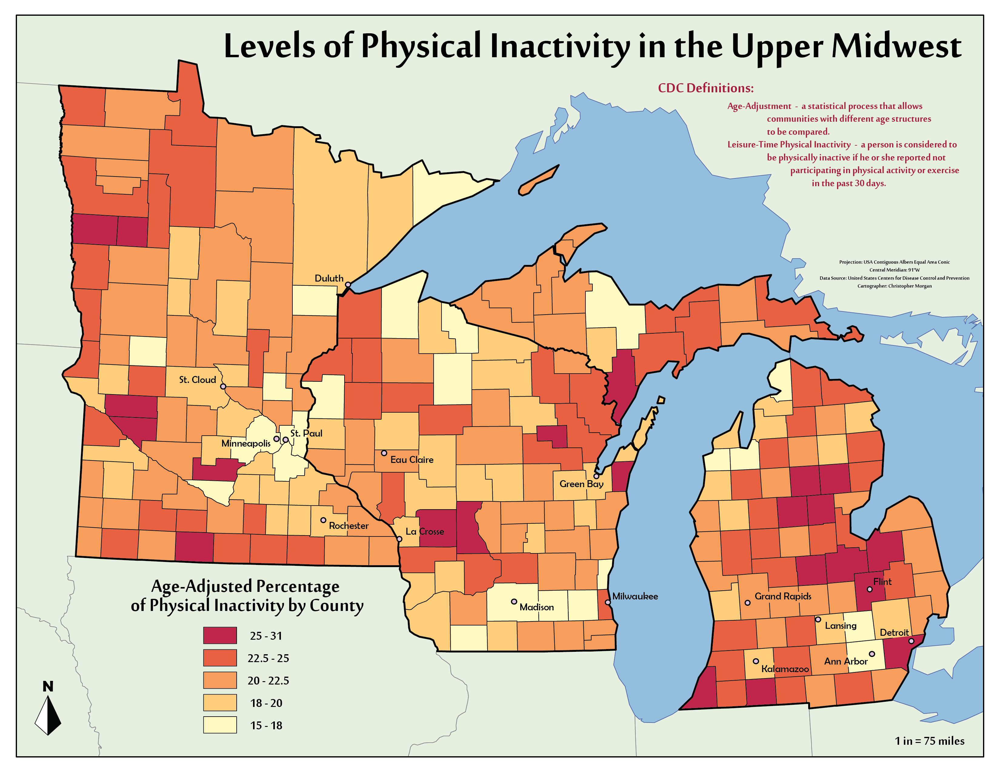

Inspired by my dad's work in Active Communities for the Wisconsin Department of Health Services, I wanted to take a look at who is (or isn't) exercising across the Upper Midwest. Both of the counties shown on this map that I've lived in are among the most active, but that's not always thanks to me...
